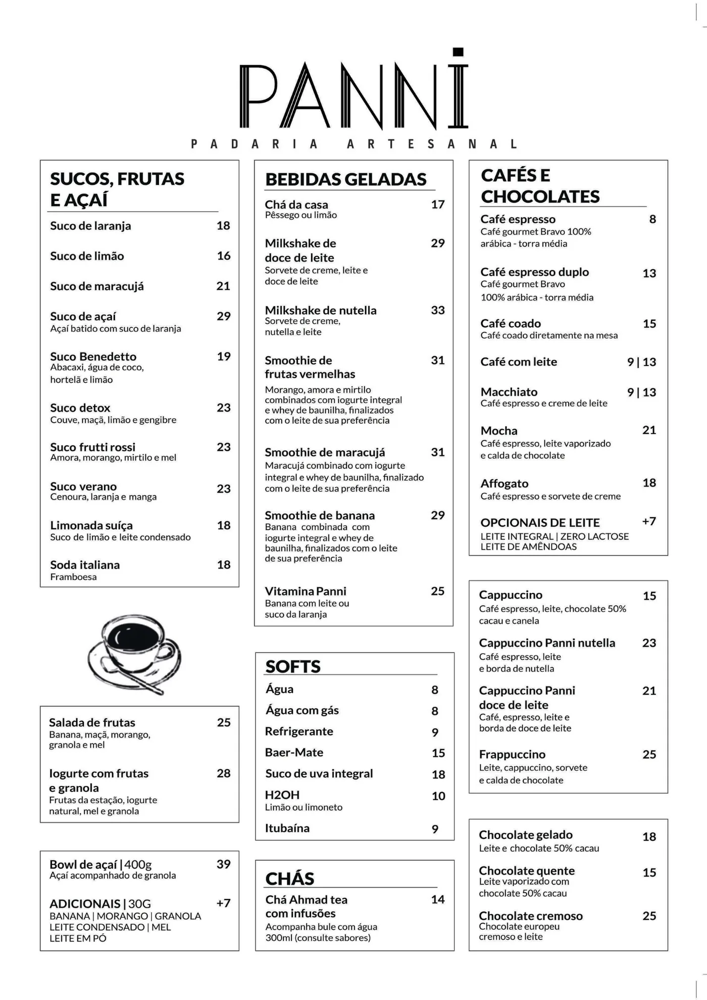
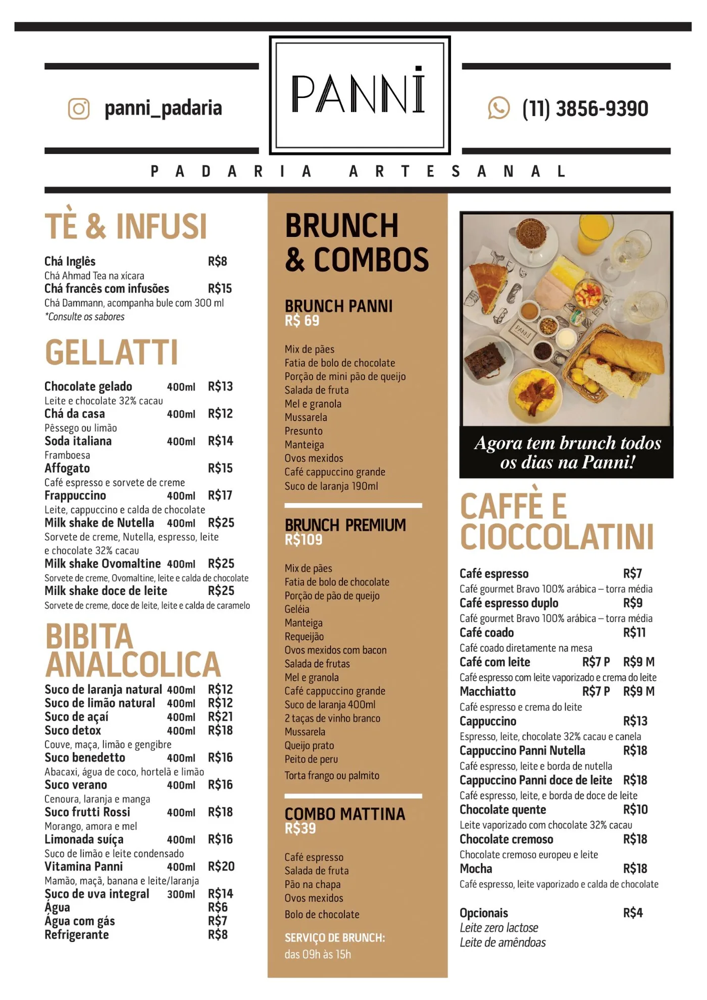

Unidade 1Água Fria
- Endereço
- Rua Ismael Neri, 485
Água Fria, São Paulo - Telefone
- (11) 2476-1341
- Horário
- Todos os dias, 8h às 22h
O casarão de tijolo entre as árvores de Água Fria e a casa da Avenida Braz Leme. A mesma Panni, do pão na chapa à pizza do fim do dia. Escolha por onde entrar.
As duas casas, todos os dias, das 8h às 22h
 Unidade 1
Unidade 1
Um casarão rústico numa rua cheia de árvores, com varanda, espaço kids e dois salões para eventos.
Entrar na casa Unidade 2
Unidade 2
Pães, doces e cheiro bom de café na Braz Leme. Salão amplo, mesas na calçada e drinks para o fim do dia.
Entrar na casa

Imagine uma padaria onde você toma o café com pão na chapa pela manhã e termina o dia com pizza e happy hour. Num ambiente agradável, intimista e informal, para passar horas sem ver o tempo passar.
Assim nasceu a Panni: uma padaria artesanal para qualquer hora do dia, seja um momento sozinho, um encontro com a família e os amigos ou uma reunião de trabalho.
A casa muda ao longo do dia. Escolha um horário e veja o que está saindo do forno.

O croissant é o carro-chefe da manhã. Peça com um café e fique o tempo que quiser.

De segunda a sexta, das 12h às 15h. Prato feito com calma, servido rápido para quem volta ao trabalho.
Durante a semana, café da tarde. No fim de semana, brunch para reunir a família à mesa.

Quando escurece, a padaria vira lugar de jantar. Pizza em fatias, sopas e uma carta de vinhos.
Para fechar o dia sem pressa. Escolha o sabor da pizza romana e a casa serve a taça.
Válido de segunda a quarta, a partir das 19h, nas duas unidades.
Cada unidade tem o seu, com os pratos e preços de lá.

Do café da manhã à pizza da noite, com os pratos e preços da casa de Água Fria.
Abrir o cardápio
Do café da manhã à pizza da noite, com os pratos e preços da casa da Braz Leme.
Abrir o cardápioPara levar ou receber em casa, pelo cardápio digital.